Summaries for several ICRA 2020 papers
本届ICRA有数篇paper在之前已经有review, "A General Framework for Uncertainty Estimation in Deep Learning", "FADNet: A Fast and Accurate Network for Disparity Estimation" "Object-Centric Stereo Matching for 3D Object Detection"
目录:
- Summaries for several ICRA 2020 papers
- Event-Based Angular Velocity Regression with Spiking Networks
- Pedestrian Planar LiDAR Pose (PPLP) Network for Oriented Pedestrian Detection Based on Planar LiDAR and Monocular Images
- CNN Based Road User Detection Using the 3D Radar Cube
- PST900: RGB-Thermal Calibration, Dataset and Segmentation Network
- Instance Segmentation of LiDAR Point Clouds
- SegVoxelNet: Exploring Semantic Context and Depth-aware Features for 3D Vehicle Detection from Point Cloud
- Radar as a Teacher: Weakly Supervised Vehicle Detection using Radar Labels
- Self-supervised linear motion deblurring
- Fast Panoptic Segmentation Network
- Real-Time Semantic Stereo Matching
- MultiDepth: Single-Image Depth Estimation via Multi-Task Regression and Classification
- MPC-Net: A First Principles Guided Policy Search
- MapLite: Autonomous Intersection Navigation Without a Detailed Prior Map
这里继续搜集多篇有趣的ICRA 2020 papers.
Event-Based Angular Velocity Regression with Spiking Networks
这篇paper利用了2018NeurIPS的一篇关于spiking neural network的文章，这篇文章提出了SNN的一个训练方法，并且介绍了相关的概念，同时给出了pytorch库/cuda代码用于加速运算.
本文利用了NIPS paper的这个库，输入为序列的image-like event sequence,输出为序列的三轴角速度，
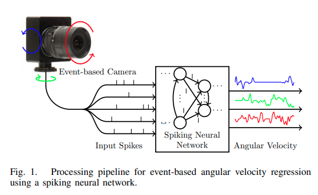
仿真数据来自于esim仿真器
Pedestrian Planar LiDAR Pose (PPLP) Network for Oriented Pedestrian Detection Based on Planar LiDAR and Monocular Images
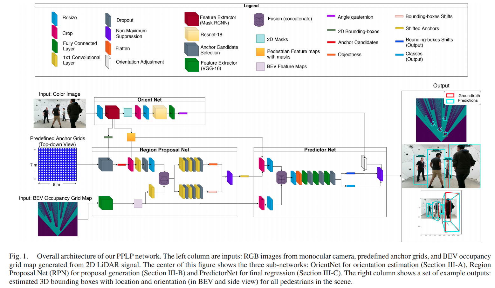
CNN Based Road User Detection Using the 3D Radar Cube
这篇paper调用底层的radar数据，同时使用底层的radar cube数据以及radar target数据，在纯radar的条件下实现了 3D object detection.
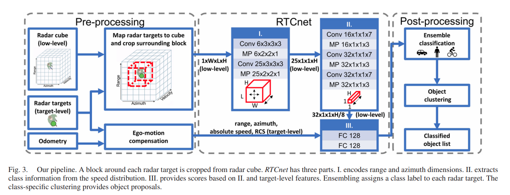
PST900: RGB-Thermal Calibration, Dataset and Segmentation Network
本文提出的主要贡献是 RGB-Thermal的校正(利用一个双目RGB相机得到深度估计，再回投到Thermal上)以及一个语义分割数据集，
Instance Segmentation of LiDAR Point Clouds
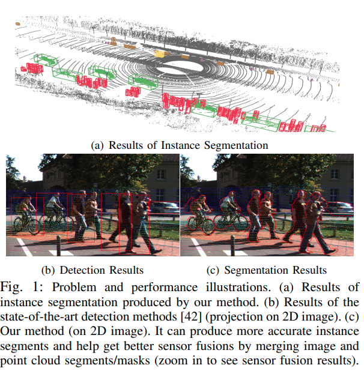 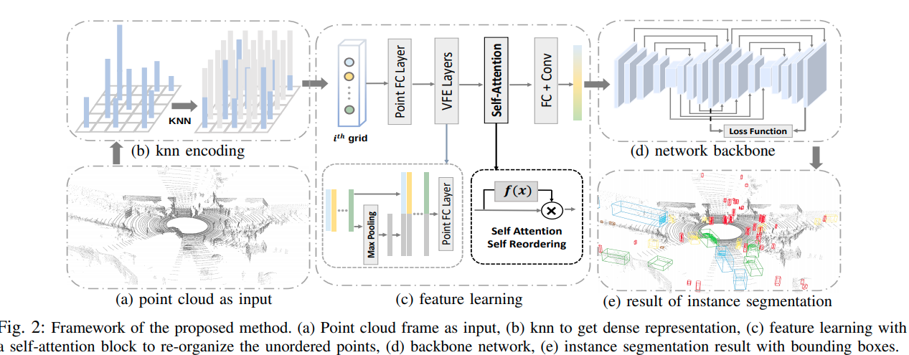
SegVoxelNet: Exploring Semantic Context and Depth-aware Features for 3D Vehicle Detection from Point Cloud
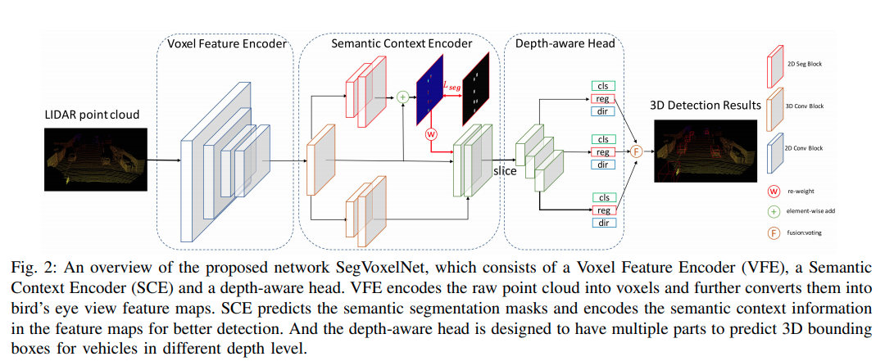
这篇paper来自于D4LCN的组。
语义分割BEV Ground Truth来自于bbox直接的投影。Depth Aware的理解是近处、远处的点云分布密度差距较大，将BEV沿着深度轴分成带有重叠部分的几个部分，执行不同的卷积操作。在KITTI上的性能与PointPillars和PointRCNN相近。
Radar as a Teacher: Weakly Supervised Vehicle Detection using Radar Labels
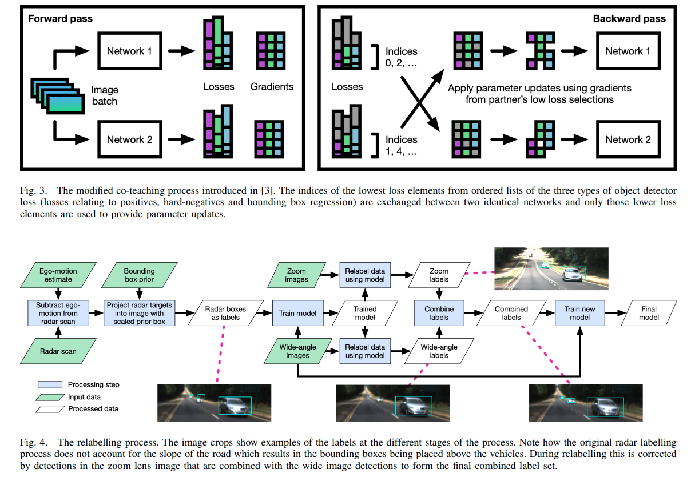
这篇paper建议参考此前NIPS的 co-teaching的paper
Self-supervised linear motion deblurring
这篇paper出自KITTI数据集的实验室。这篇paper的主要idea是使用一个reblur module，在线性运动的假设下，利用光流与blurring之间的关系，将一个deblurred的module重新变为blurred，这样就可以形成一个自监督的体系。
本文使用现成的deblur以及光流网络结构，利用前后帧的consistence训练光流，同时对deblur结果提出隐性的要求。前面提到的自监督网络loss可以训练deblur网络，同时对光流的计算提出隐性的要求，本文的reblur是一个非学习可微分模块，因而整个网络可微分，可以端到端自监督学习。
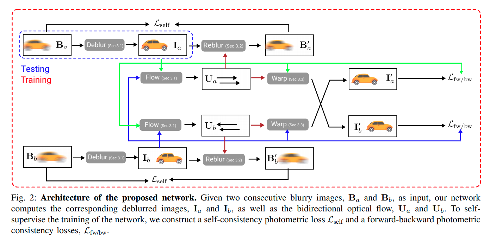
reblur模块方程:
其中指的是将原图根据光流进行warping,
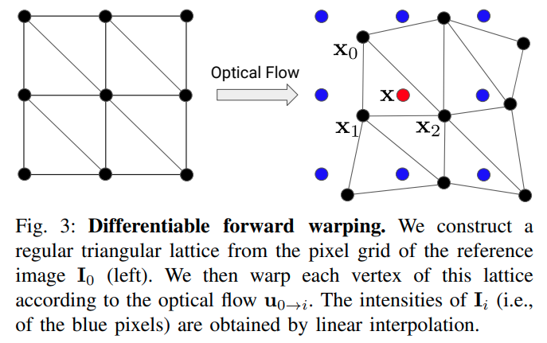
Fast Panoptic Segmentation Network
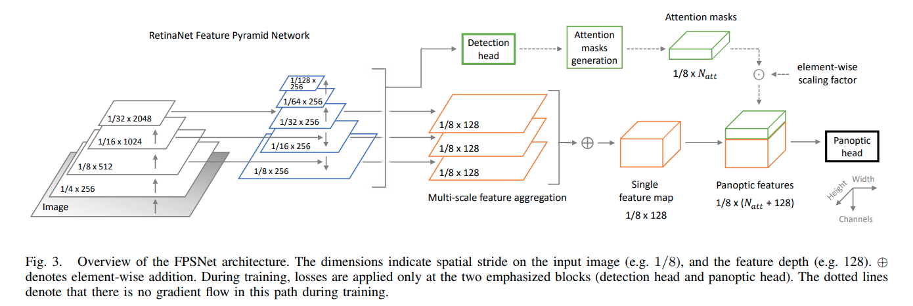 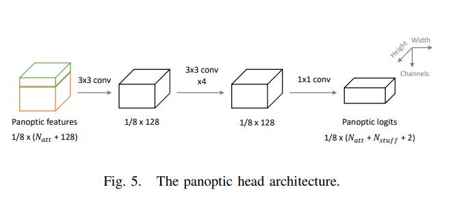
Real-Time Semantic Stereo Matching
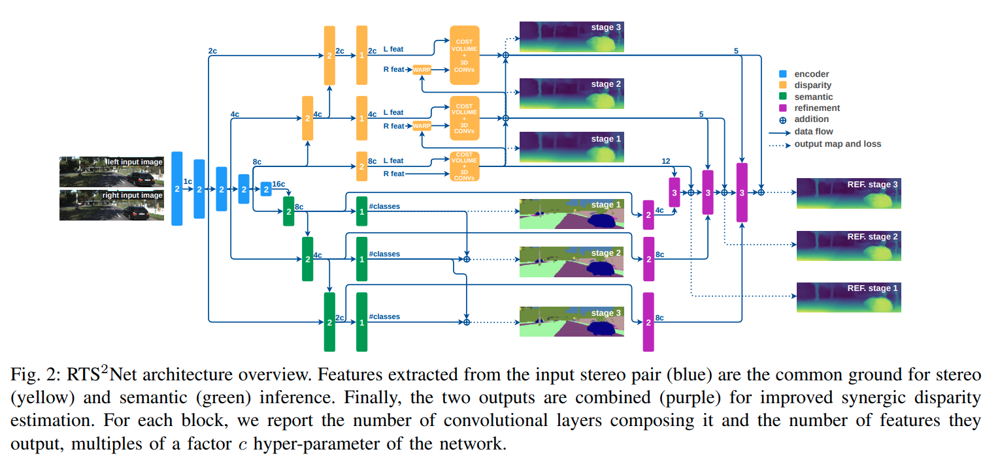
在语义分割和双目上都有不错的点数(一般般)，主要是速度比较快
MultiDepth: Single-Image Depth Estimation via Multi-Task Regression and Classification
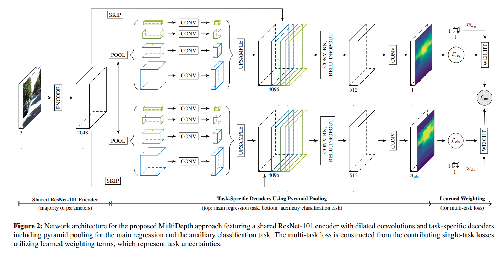
深度预测问题同时走分类与回归。
MPC-Net: A First Principles Guided Policy Search
这篇paper使用类模仿学习，得到一个快速的MPC approximator.本文利用最优控制解的必要条件，HJB方程，要求一下哈密顿量最小化,
本文提出使用SLQ(Sequential-Linear-Quadritic)最优化方法进行最优化求解(这个算法类似于连续时间的迭代LQR),通过这个求解器可以得到MPC teacher的控制命令，以及value function关于x的求导
学习方法: 1. 在每一次迭代中，使用MPC以及网络的融合信号，对系统完成一个序列的仿真，融合比重随着训练的进行逐渐由网络输出主导，在buffer中存下时间戳，state，value函数对于state的导数矢量,网络最优输出值等结果。 2. 从buffer中进行采样，使用存储中的state, dvdx, t以及网络输出的u，计算哈密顿量。对于本文实验中给出二次损失函数，与相关的只有regularization项,dvdx为常矢量，为模型的,与系统模型有关，也就会与有关。 3. 把哈密顿量理解为损失函数，使用梯度下降优化网络参数，
MapLite: Autonomous Intersection Navigation Without a Detailed Prior Map
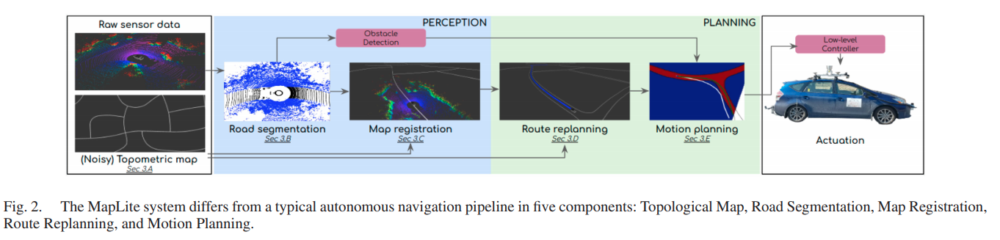
这篇paper提出了一个系统，仅利用拓扑地图完成无人车的定位与导航任务。点云的路面分割使用的做法是对每一个点提取设定的五个feature，使用linear SVM判断它是否在地面上。关键对于拓扑地图的定位，本文使用传统的概率滤波算法,有一定局限性，但是在一定范围内显然是有效的。